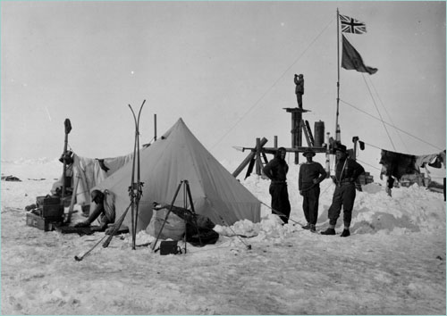

My first html heading
Followed by a paragraph
My second html heading
Followed by a paragraph
- and an undordered list
- which I'm trying out like
- this
- to see what
- happens
- and an ordered list
- which will contain
- this content
- which is extremely
- inspiring and I'm sure will lead to
- the betterment of all humanity
In 1914 Ernest Shackleton, 26 crew and 1 stowaway sailed to the Antarctic aboard Endurance. Their goal was to be the first people to walk across the continent.

Before they could make landfall in Antarctica, Endurance became trapped in the sea ice, and was slowly crushed
All hands were forced to abandon ship and make camp on the shifting ice floes, as the Antarctic winter set in. So began a 2-year struggle for survival, and Shackleton's perilous journey across ice, sea and glaciers, to find rescue.
Here are some links:
First, an internal link:
then, an external link which opens in the same tab:
a link to the BBC news websitefinally, an external link which opens in a new tab:
a link to the BBC news website